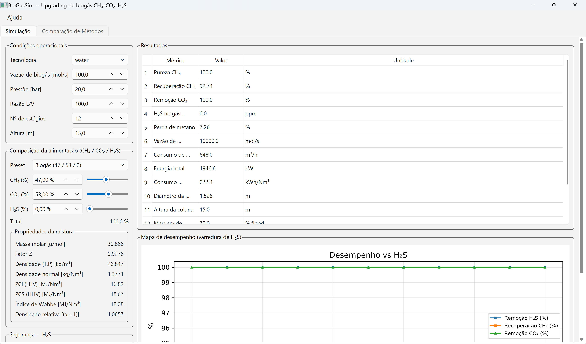

Manual de Ajuda · BioGasPy
BioGasSim · Upgrading de Biogás
Simulador científico de upgrading de biogás (remoção de CO₂) em Python, modular, orientado a objetos e de código aberto. Projeto, análise e comparação de processos de purificação para produção de biometano a partir de biogás 47% CH₄ / 53% CO₂.
§1Clonar o repositório
Requer Git instalado.
git clone https://github.com/ileaof/biogaspy.git
cd biogaspy
Sem Git? Use Code → Download ZIP na página do repositório e extraia. Em seguida, siga a Instalação.
§2Instalação
Recomenda-se um ambiente virtual:
python -m venv .venv
# Windows: .venv\Scripts\activate
# Linux/macOS: source .venv/bin/activate
pip install -e . # instala o pacote + o comando `biogassim`
# extras opcionais:
pip install -e ".[gui]" # interface gráfica (PySide6)
pip install -e ".[excel]" # export para .xlsx (openpyxl)
Requer Python ≥ 3.10, numpy, scipy, matplotlib, pandas.
§3Como iniciar
Após a instalação, a linha de comando (CLI) fica disponível de duas formas equivalentes — use a que preferir:
biogassim <comando> # comando de console (requer a pasta de scripts do
# Python no PATH)
python -m biogassim.cli <comando> # sempre funciona, sem depender do PATH
Veja todos os comandos com biogassim --help. Para abrir a interface gráfica
(GUI): biogassim gui (detalhes na seção Interface gráfica).
Para gerar e abrir o manual de ajuda em HTML: biogassim help (ou
biogassim help --open para abrir no navegador; --rebuild regenera a partir do
README).
§4Uso rápido (CLI)
python -m biogassim.cli run-water # lavagem com água (20 bar)
python -m biogassim.cli run-mea # lavagem química com MEA (2 bar)
python -m biogassim.cli run-psa # PSA (estimativa)
python -m biogassim.cli run-membrane # membrana (1 estágio)
python -m biogassim.cli run-membrane-multi # membrana multi-estágio (reciclo/série)
python -m biogassim.cli compare # compara tecnologias (ver abaixo)
Resultados e gráficos são salvos em examples_output/.
Comparação de métodos (CLI)
O comando compare roda várias tecnologias de upgrading sob a mesma
alimentação e devolve uma tabela padronizada (pureza, recuperação, remoção de
CO₂/H₂S, energia elétrica/térmica, consumo de água/solvente, OPEX, custo
específico, qualidade do gás tratado), ranking uni- e multi-critério e exportação.
É o mesmo backend (biogassim.comparison.ComparisonEngine) que a aba de
comparação da GUI — CLI e GUI produzem resultados numericamente idênticos.
biogassim compare # métodos recomendados, biogás 47/53
biogassim compare water mea psa membrane # só os métodos informados
biogassim compare --case meu_projeto/case.json # herda feed (composição/vazão) do caso
biogassim compare --mode optimized --flow 200 # modo otimizado (otimiza antes de rodar)
biogassim compare --export comparison.xlsx # exporta relatório (.csv/.json/.html/.xlsx/.pdf)
Métodos disponíveis: water, mea, dea, mdea, selexol, rectisol,
psa, membrane, membrane-multi (alias: multi). Os marcados como
Experimental (DEA, Rectisol, PSA) são estimativas — aparecem, mas o conjunto
Recomendados traz apenas os operacionais e representativos.
Um método que falha (não converge/erro) é registrado como falha com a mensagem do solver, sem cancelar a comparação — os demais métodos seguem e aparecem na tabela.
Casos e composição CH₄–CO₂ (Milestone 1)
Fluxo de trabalho baseado em casos (JSON) para estudar o efeito da composição binária CH₄–CO₂ sobre desempenho, dimensionamento e economia:
biogassim new meu_projeto --tech water # cria projeto + case.json padrão
biogassim set CH4=0.60 --case meu_projeto/case.json # CO2 vira 0.40 (complemento)
biogassim set CH4=46 CO2=53 H2S=1 --case meu_projeto/case.json # ternário CH4-CO2-H2S
biogassim run meu_projeto/case.json # roda o caso, imprime dashboard
biogassim run meu_projeto/case.json --max-h2s-ppm 4 # impõe limite de H2S no tratado
biogassim props CH4=0.60 CO2=0.40 --P 20 # MM, Z, densidade, LHV/HHV, Wobbe, SG
biogassim sweep CH4=0.20:0.95:0.05 --out sweep.csv # estudo paramétrico de composição
biogassim sweep H2S=0:0.05:0.005 --tech water # varredura do contaminante H2S
biogassim export results.xlsx --case meu_projeto/case.json
biogassim report --case meu_projeto/case.json # relatório HTML
A composição é sempre normalizada e validada. Para feed binário CH₄–CO₂ a
fração complementar é atualizada automaticamente (mexer no CH₄ atualiza o CO₂);
para feed multi-espécie (ex.: CH₄+CO₂+H₂S) todas as frações são
normalizadas para somar 100%. O sweep varre a fração de CH₄ (CH4=...) ou
do contaminante H₂S (H2S=..., mantendo a razão CH₄:CO₂) e tabela pureza,
recuperação, remoção de CO₂/H₂S, perda de metano, consumo de solvente/água,
energia, diâmetro/altura da coluna, perda de carga, margem de inundação, custo e
qualidade do gás tratado — a base dos mapas de desempenho.
Exemplo completo (CLI): biogás CH₄–CO₂–H₂S
Fluxo ponta-a-ponta com comandos encadeados: cria o projeto, define a composição (binária → ternária com H₂S), roda o caso com e sem limite de H₂S no tratado, calcula propriedades da mistura, faz as duas varreduras (composição e contaminante) e exporta resultados/relatório. As saídas abaixo são reais.
biogassim new meu_projeto --tech water # 1) cria projeto + case.json padrão
Projeto criado em 'meu_projeto'
Caso padrão: meu_projeto\case.json
Resultados : meu_projeto/results/
biogassim set CH4=0.60 --case meu_projeto/case.json # 2) binário: CO2 vira 0.40 (complemento)
Caso salvo em 'meu_projeto/case.json'
Composicao da alimentacao (normalizada para 100%):
CH4 60.000 %
CO2 40.000 %
TOTAL 100.000 % [OK]
Tecnologia : water
Operacional: {'P_bar': 20.0, 'L_over_V': 100.0, 'N_stages': 12, 'height_m': 15.0}
biogassim set CH4=46 CO2=53 H2S=1 --case meu_projeto/case.json # 3) ternário CH4-CO2-H2S
Caso salvo em 'meu_projeto/case.json'
Composicao da alimentacao (normalizada para 100%):
CH4 46.000 %
CO2 53.000 %
H2S 1.000 %
TOTAL 100.000 % [OK]
biogassim run meu_projeto/case.json # 4) roda o caso, imprime dashboard
FEED GAS | UPGRADED GAS
CH4 46.00 % | CH4 100.00 % CO2 53.00 % | CO2 0.00 % H2S 1.00 % | H2S 0.0000 % (0.0 ppm)
PERFORMANCE
CH4 Recovery 92.61 % CO2 Removal 100.00 % H2S Removal 100.00 %
Water 648.0 m3/h Energy 0.567 kWh/Nm3
GAS QUALITY (treated): LHV 35.790 HHV 39.720 Wobbe 53.370 Density 0.716 Rel.Dens. 0.554
SAFETY -- H2S: gas tratado ~0 ppm | liquido 0.00010 mol H2S/mol | Engine-suitable (<=10 ppm): YES
RUN -- meu_projeto [water] convergiu=True iter=7
biogassim run meu_projeto/case.json --max-h2s-ppm 4 # 5) impõe limite de H2S no tratado (4 ppm)
...
SAFETY -- H2S: Engine-suitable (H2S <= 4.0 ppm): YES
RUN -- meu_projeto [water] convergiu=True iter=7
biogassim props CH4=0.60 CO2=0.40 --P 20 # 6) MM, Z, densidade, LHV/HHV, Wobbe, SG
PROPRIEDADES DA MISTURA
basis : mole T_K : 298.15 P_bar: 20.0
x_CH4: 0.6000 x_CO2: 0.4000
molar_mass_g_per_mol : 27.2298
Z : 0.9366
density_kg_per_Nm3 : 1.2149
LHV_MJ_per_Nm3 : 21.4770 HHV_MJ_per_Nm3 : 23.8320
Wobbe_index_MJ_per_Nm3: 24.5800 specific_gravity: 0.9401
biogassim sweep CH4=0.20:0.95:0.05 --out sweep.csv # 7) estudo paramétrico de composição
VARREDURA DE COMPOSICAO -- water (CH4 20%..95%)
CH4% Pur% Rec% CO2r% kW kWh/Nm3 D(m) Flood%
20.0 100.00 88.19 100.00 1946.6 1.369 1.07 70.0
40.0 100.00 92.15 100.00 1946.6 0.655 1.43 70.0
60.0 100.00 93.47 99.99 1946.6 0.430 1.70 70.0
80.0 99.98 94.12 99.91 1946.6 0.321 1.92 70.0
95.0 99.98 94.44 99.62 1946.6 0.269 2.06 70.0
Exportado: sweep.csv
biogassim sweep H2S=0:0.05:0.005 --tech water # 8) varredura do contaminante H2S
VARREDURA DE H2S -- water (H2S 0.0..5.0 mol%)
H2S% H2Srem% Pur% Rec% CO2r% H2St_ppm kW kWh/Nm3 Water
0.00 - 100.00 92.74 100.00 0.0 1946.6 0.554 648.0
1.00 100.00 100.00 92.65 100.00 0.0 1946.6 0.560 648.0
3.00 100.00 100.00 92.46 100.00 0.0 1946.6 0.573 648.0
5.00 100.00 100.00 92.27 100.00 0.0 1946.6 0.586 648.0
biogassim export results.xlsx --case meu_projeto/case.json # 9) exporta resultados
biogassim report --case meu_projeto/case.json # 10) relatório HTML
Exportado: results.xlsx (caso 'meu_projeto', water)
Relatorio HTML: meu_projeto_report.html
Os arquivos meu_projeto/case.json, sweep.csv, results.xlsx e
meu_projeto_report.html são gravados no diretório corrente; o results/ do
projeto recebe as saídas por caso.
Exemplo completo (CLI): MEA, parâmetros de processo e comparação
Agora com lavagem química por MEA (amina): cria o projeto, define o feed binário CH₄–CO₂, altera parâmetros de processo (pressão, razão L/V, estágios, altura, vazão), roda, calcula propriedades em temperatura e pressão dadas, gera relatório e compara tecnologias pela CLI. (MEA cobre CH₄–CO₂; a absorção reativa de H₂S/NH₃ em amina é roadmap — por isso o feed aqui é binário.)
biogassim new projeto_mea --tech mea # 1) cria projeto MEA (P=2, L/V=20, N=8, H=12)
Projeto criado em 'projeto_mea'
Caso padrão: projeto_mea\case.json
Resultados : projeto_mea/results/
biogassim set CH4=0.55 CO2=0.45 --case projeto_mea/case.json # 2) feed binário CH4-CO2
Caso salvo em 'projeto_mea/case.json'
Composicao da alimentacao (normalizada para 100%):
CH4 55.000 % CO2 45.000 % TOTAL 100.000 % [OK]
Tecnologia : mea
Operacional: {'P_bar': 2.0, 'L_over_V': 20.0, 'N_stages': 8, 'height_m': 12.0}
# 3) altera parâmetros de processo: pressão, razão L/V, estágios, altura, vazão
biogassim set P_bar=2.5 L_over_V=25 N_stages=10 height_m=14 flow_mols=120 --case projeto_mea/case.json
Caso salvo em 'projeto_mea/case.json'
Composicao da alimentacao (normalizada para 100%):
CH4 55.000 % CO2 45.000 % TOTAL 100.000 % [OK]
Tecnologia : mea
Operacional: {'P_bar': 2.5, 'L_over_V': 25.0, 'N_stages': 10, 'height_m': 14.0}
biogassim run projeto_mea/case.json # 4) roda o caso MEA, imprime dashboard
FEED GAS: CH4 55.00 % CO2 45.00 %
UPGRADED GAS: CH4 100.00 % CO2 0.00 % H2S 0.0000 % (0.0 ppm)
PERFORMANCE
CH4 Recovery 99.71 % CO2 Removal 100.00 % Energy 1.870 kWh/Nm3
GAS QUALITY (treated): LHV 35.790 HHV 39.720 Wobbe 53.370 Density 0.716 Rel.Dens. 0.554
RUN -- projeto_mea [mea] convergiu=True iter=4
# 5) propriedades da mistura em T=313.15 K e P=2.5 bar (MM, Z, densidade, LHV/HHV, Wobbe, SG)
biogassim props CH4=0.55 CO2=0.45 --T 313.15 --P 2.5
PROPRIEDADES DA MISTURA
basis: mole T_K: 313.15 P_bar: 2.5 x_CH4: 0.5500 x_CO2: 0.4500
molar_mass_g_per_mol : 28.6282
Z : 0.9929
density_kg_per_Nm3 : 1.2772
LHV_MJ_per_Nm3 : 19.6870 HHV_MJ_per_Nm3 : 21.8460
Wobbe_index_MJ_per_Nm3 : 21.9740 specific_gravity: 0.9884
biogassim report --case projeto_mea/case.json # 6) relatório HTML do caso MEA
...
Relatorio HTML: projeto_mea_report.html
# 7) compara tecnologias via CLI (herda feed/vazão do caso) e exporta relatório
biogassim compare water mea --case projeto_mea/case.json --export comparacao.xlsx
COMPARAÇÃO -- feed CH4=55.0%, CO2=45.0% flow=120.0 mol/s modo=standard
Método Conv Pureza% Recup% CO2r% kW kWh/Nm³ USD/Nm³
Water Scrubbing S 100.00 93.23 100.00 2335.9 0.471 0.0259
MEA (amina) S 100.00 99.81 100.00 9813.5 1.847 82.1110
2/2 métodos convergiram.
Melhor por purity_CH4 : Water Scrubbing
Melhor por recovery_CH4 : MEA (amina)
Melhor por total_kW : Water Scrubbing
Melhor por specific_cost_usd_per_Nm3: Water Scrubbing
Ranking ponderado (topo): Water Scrubbing (score 0.75)
Exportado: comparacao.xlsx
Chaves aceitas por set (parâmetros de processo): P_bar, L_over_V,
N_stages, height_m, flow_mols (ou flow), tech (ou technology) e as
espécies de gás (CH4, CO2, H2S, N2, ...). Temperatura e pressão para
propriedades passam como flags em props/batch (--T, --P); a pressão do
processo (absorvedor) é P_bar em set. O compare herda composição e vazão do
caso e aceita ainda --flow, --mode optimized (otimiza antes de rodar) e
--export (.csv/.json/.html/.xlsx/.pdf).
Misturas multicomponente e simulação em lote
A composição não é restrita a CH₄–CO₂: qualquer subconjunto dos gases
CH₄, CO₂, N₂, O₂, H₂, H₂O, H₂S, NH₃, CO, Ar é aceito (adicionar espécies é
só cadastrar em Properties/components.py, sem tocar no solver). A composição
pode ser dada em fração molar, mássica ou volumétrica, ou como vazão molar
ou mássica (--basis mole|mass|volume|molar_flow|mass_flow), sempre
normalizada.
biogassim props CH4=0.72 CO2=0.25 N2=0.03 --P 20 # propriedades de qualquer mistura
biogassim props CH4=0.5 CO2=0.5 --basis mass # entrada em base mássica
biogassim batch feeds.csv --tech water --out results.csv # centenas/milhares de feeds
O batch lê um CSV (uma linha por alimentação; colunas = espécies, + opcionais
name, T_K, P_bar, basis, technology) e calcula as propriedades de cada
mistura; com --tech, roda também o upgrading e reporta a remoção por espécie.
Absorção de gases ácidos (water scrubbing): a água absorve, além do CO₂, o
H₂S (≈3× mais solúvel — removido preferencialmente) e o NH₃ (muito
solúvel), enquanto N₂/O₂/H₂/Ar/CO passam praticamente direto. A remoção é
reportada por espécie (H2S_removal, NH3_removal, N2_removal, …). O
equilíbrio gás-líquido usa Lei de Henry com dependência de temperatura (van't
Hoff); a equação de estado (Peng-Robinson) estende-se ao ternário CH₄–CO₂–H₂S
com parâmetros de interação binária (kij) não-nulos armazenados em
Thermodynamics/Interactions.py (CH₄–CO₂≈0,092, CH₄–H₂S≈0,083, CO₂–H₂S≈0,097).
A coluna resolve o transporte acoplado das três espécies ao longo dos estágios.
Após o upgrading, o simulador reporta a qualidade do gás tratado: composição (CH₄/CO₂/H₂S), poder calorífico (LHV/HHV), Índice de Wobbe, densidade e densidade relativa, além da concentração residual de H₂S (mol% e ppm) e do carregamento de H₂S na fase líquida (mol H₂S/mol solvente). Nas aminas (MEA), a absorção reativa de H₂S/NH₃ ainda é roadmap — o modelo de amina trata só CH₄/CO₂.
H₂S — gás ácido tóxico e corrosivo
O sulfeto de hidrogênio (H₂S) está presente em praticamente todo biogás (digestão anaeróbia de proteínas/sulfetos), tipicamente 50–4.000 ppm, podendo chegar a % em aterros/corrosivos. É altamente tóxico (IDLH 50 ppm, TLV-TWA ACGIH 1 ppm), corrosivo (ataca aço, concretos e lubrificantes) e odorante (o limiar olfativo é ~0,0005 ppm, mas o olfato fadiga rapidamente em concentrações maiores — o "silêncio" não significa segurança).
No water scrubbing, o H₂S é mais solúvel em água que o CO₂ (H_H₂S < H_CO₂), sendo removido preferencialmente no mesmo contato, mas parte acompanha o gás tratado conforme a razão L/V e a pressão. O efeito sobre o processo:
- Recuperação de CH₄ — levemente reduzida (a absorção de H₂S dilui o solvente e compete com CO₂, e algum CH₄ é co-absorvido).
- Remoção de CO₂ — pouco afetada (H₂S é traço frente ao CO₂).
- Equipamento — o efluente líquido carregado de H₂S é corrosivo e exige stripping + tratamento antes do descarte/reuso; o gás tratado deve atender ao limite de H₂S do destino (motor ≤ ~10 ppm; gasoduto ≤ ~4 ppm).
Segurança no simulador: sempre que H₂S está presente na alimentação, o
software emite avisos distinguindo feed / gás tratado / fase líquida, e o
limite máximo admissível de H₂S no gás tratado é configurável (--max-h2s-ppm
na CLI, campo na GUI; biogassim.safety.set_max_h2s_treated_ppm). O simulador
nunca classifica silenciosamente um gás com H₂S significativo como adequado
para motor — a decisão engine_suitable é explícita.
Estudos paramétricos e otimização
Superfícies de resposta (1-D ou 2-D) sobre qualquer combinação de composição
(CH4) e variáveis operacionais (P_bar, L_over_V, N_stages,
height_m, flow_mols), coletando o conjunto completo de métricas:
biogassim sensitivity L_over_V=40:120:20 --tech water --out curva.csv
biogassim sensitivity P_bar=5:30:5 --vary L_over_V=20:120:20 \
--metric recovery_CH4 --out surf.csv --plot surf.png # heatmap 2-D
A otimização faz busca em grade sob restrições (JSON de especificação):
biogassim optimize optimization.json --out best.json
{
"technology": "water",
"objective": "specific_kWh_per_Nm3",
"goal": "minimize",
"variables": {"L_over_V": [40, 120, 40], "P_bar": [10, 25, 5]},
"constraints": {"purity_CH4": [">=", 99.9], "recovery_CH4": [">=", 90]}
}
→ acha a condição de menor energia específica que satisfaz pureza ≥ 99,9% e recuperação ≥ 90% (ex.: L/V=120, P=15 bar → 0,48 kWh/Nm³).
Interface gráfica (GUI)

Instale o extra da GUI (uma vez) e abra a janela principal:
pip install -e ".[gui]" # instala PySide6 (alternativamente, tenha PyQt5)
biogassim gui # abre a janela principal
Três formas equivalentes de iniciar a GUI — use qualquer uma:
biogassim gui # comando de console
python -m biogassim.cli gui # via a CLI (se `biogassim` não estiver no PATH)
python -m biogassim.gui.app # inicia o pacote da GUI diretamente
Num desktop normal (Windows/macOS/Linux) a janela abre com fontes normais —
não defina QT_QPA_PLATFORM=offscreen (isso é apenas para testes headless).
Como usar a GUI
A GUI (PySide6 preferido, PyQt5 alternativo — via shim) é a camada interativa sobre o mesmo motor de simulação da CLI. A janela tem cinco áreas (a aba Simulação tem barra de rolagem própria, então todo o conteúdo permanece acessível com a janela reduzida):
- Condições operacionais (topo, à esquerda) — escolha a tecnologia
(
wateroumea) e ajuste vazão do biogás, pressão, razão L/V, número de estágios e altura da coluna. Trocar a tecnologia carrega os valores padrão correspondentes. - Composição da alimentação (meio, à esquerda) — defina a mistura CH₄/CO₂/H₂S por um preset (biogás 47/53/0, biogás c/ 1–5% H₂S, digestor 60/40, metano puro), pelos campos numéricos em % ou pelos sliders. A composição é normalizada: editar um componente redistribui o restante entre os outros dois preservando a razão atual (mexer no H₂S mantém a proporção CH₄:CO₂). O total é sempre mostrado e validado contra 100%. O bloco Propriedades da mistura recalcula em tempo real: massa molar, fator Z, densidade (a T,P) e normal, PCI/PCS (LHV/HHV), Índice de Wobbe e densidade relativa ao ar — agora incluindo a contribuição do H₂S.
- Segurança H₂S (logo abaixo da composição) — banner que acende sempre que há H₂S na alimentação (tóxico/corosivo), com o limite máximo admissível de H₂S no gás tratado configurável em ppm. Após Executar caso, mostra a concentração de H₂S no gás tratado, o carregamento líquido e a decisão de adequação para motor (SIM/NÃO).
- Solver (base, à esquerda) — Executar caso roda a simulação com a composição e as condições atuais; Varrer H₂S roda o estudo paramétrico do contaminante. A linha de status logo abaixo é o monitor de convergência (convergiu?, número de iterações, pureza e recuperação).
- Resultados (à direita) — tabela com pureza de CH₄, recuperação, remoção de CO₂, remoção de H₂S e H₂S no gás tratado (ppm), perda de metano, consumo de solvente/água, energia, diâmetro e altura da coluna, margem de inundação, Wobbe do gás tratado e custo específico.
- Mapa de desempenho (base, à direita) — gráfico de remoção de H₂S, recuperação de CH₄ e remoção de CO₂ em função da fração de H₂S na alimentação.
Fluxo típico de uso:
- Escolha a tecnologia no painel de condições operacionais.
- Defina a composição (preset, campo
%ou slider) — as propriedades da mistura são atualizadas a cada mudança; o banner de segurança acende se houver H₂S. - Ajuste as condições operacionais (pressão, L/V, estágios, altura).
- Clique em Executar caso — as métricas aparecem na tabela de resultados, o status mostra a convergência e o banner de segurança atualiza com o H₂S tratado e a adequação para motor.
- Clique em Varrer H₂S — o mapa de desempenho mostra como a remoção de H₂S, a recuperação de CH₄ e a remoção de CO₂ variam na faixa de 0–5 mol% de H₂S.
Todos os cálculos reutilizam o mesmo núcleo da CLI (biogassim.cases); portanto,
para as mesmas entradas, GUI e CLI produzem resultados idênticos.
A barra de menu tem Ajuda → Manual de Ajuda (HTML) (abre docs/HELP.html
no navegador, gerando-o a partir deste README se necessário) e Sobre o BioGasPy
(autoria/afiliação).
Aba "Comparação de Métodos"
A janela principal tem duas abas: Simulação (acima) e Comparação de
Métodos. A segunda compara as tecnologias de upgrading lado a lado usando
o mesmo backend que biogassim compare (biogassim.comparison.ComparisonEngine)
— nenhuma termodinâmica é duplicada na GUI, apenas apresentação.
Para facilitar a visualização, a aba Comparação de Métodos é dividida em duas sub-abas:
- Configuração — condições de alimentação herdadas (somente leitura), seleção de métodos, modo (Padrão/Otimizado), parâmetros por tecnologia e botões Executar / Parar / Salvar config / Carregar config.
- Resultados — tabela comparativa, gráfico de barras e ranking/decisão, com o botão Exportar. Ganha a tela inteira (em vez de dividi-la com os controles). Ao concluir a comparação a GUI troca automaticamente para esta sub-aba.
Cada sub-aba tem sua própria barra de rolagem (QScrollArea independente), de modo que todo o conteúdo permanece acessível mesmo com a janela reduzida ou com muitos métodos selecionados / muitos resultados exibidos.
Sub-aba Configuração:
- Condições herdadas (somente leitura) — a alimentação (CH₄/CO₂/H₂S, vazão, pressão, T, modelo termodinâmico) vem da aba Simulação, sem reentrada. Quando o feed muda, o cabeçalho é atualizado e os resultados anteriores ficam marcados como desatualizados (⚠ "Condições de alimentação alteradas — rode a comparação novamente").
- Seleção de métodos — checkboxes por tecnologia + botões Selecionar tudo / Limpar / Recomendados. Métodos experimentais aparecem rotulados.
- Modo — Padrão (parâmetros predefinidos) ou Otimizado (a engine otimiza a variável principal de cada tecnologia antes de rodar).
- Parâmetros por tecnologia — área expansível: cada método selecionado mostra seus parâmetros operacionais (água: P/L/V/N/altura; aminas: +concentração; PSA: adsorvente/pressões; membranas: material/pressões/área/estágios).
- Execução — roda em thread separada (a GUI continua responsiva), com botões Executar / Parar e um monitor de progresso por método (corrente / concluído / falhou). Um método que falha não derruba a comparação.
- Salvar / Carregar config — salva e recarrega a configuração de comparação
(métodos, parâmetros, modo, pesos) em JSON. A configuração também viaja no
arquivo de projeto (campo
comparisondo caso) quando salva pela CLI/cases.
Sub-aba Resultados:
- Tabela de resultados — uma linha por método, ~24 colunas (pureza, recuperação, remoção CO₂/H₂S, perda CH₄, vazão do produto, consumo de água/solvente, energia elétrica/térmica/total, energia específica, pressão de operação, altura/diâmetro da coluna, eficiência global, OPEX, custo específico, LHV/HHV/Wobbe do gás tratado, H₂S no gás tratado, convergiu), com ordenação e menu de visibilidade de colunas.
- Gráfico comparativo — barras por métrica (dropdown "Comparar por").
- Ranking — melhor método por critério + ranking multi-critério ponderado com pesos editáveis (pureza, recuperação, energia, custo, água).
- Exportar — exporta o relatório completo (.csv/.json/.html/.xlsx/.pdf); ao concluir a comparação a GUI troca automaticamente para esta sub-aba.
§5Uso como scripts
python -m biogassim.Examples.WaterScrubbing
python -m biogassim.Examples.MEA
python -m biogassim.Examples.MembraneMultiStage # 1 vs 2-estágios+reciclo vs série
python -m biogassim.Examples.CompareAll
§6Uso programático
from biogassim.UnitOperations import Stream, Absorber, AbsorberSpec
from biogassim.Solvents import WaterSolvent
species = ["CH4", "CO2", "H2O"]
gas = Stream.make(species, [0.47, 0.53, 0.0], flow=100.0, T=298.15, P=20e5, phase="vapor")
solv = Stream.make(species, [0.0, 0.0, 1.0], flow=10000.0, T=293.15, P=20e5, phase="liquid")
spec = AbsorberSpec(N_stages=12, packing="Pall_50", mode="isothermal",
T_op=293.15, pressure=20e5, height=15.0)
r = Absorber(gas, solv, WaterSolvent(), spec).solve()
print(r.purity_CH4, r.methane_recovery, r.CO2_removal, r.diameter)
§7Arquitetura
biogassim/
Core/ constantes, unidades, solver numérico, convergência
Thermodynamics/ EOS (Peng-Robinson, SRK), Lei de Henry, fugacidade, flash,
parâmetros de interação binária kij (Interactions.py)
Properties/ banco de componentes (CH4, CO2, H2O, N2, H2S, MEA, DEA, MDEA)
MassTransfer/ difusão, teoria dos dois filmes, correlações (Re, Sc, Sh, HTU/NTU)
Hydraulics/ recheios, flooding, perda de carga, diâmetro
UnitOperations/ Absorvedor (estágios de equilíbrio), Stripper, Compressor, ...
Solvents/ água (físico), MEA/DEA/MDEA (químico), Selexol, Rectisol
PSA/ isoteras (Langmuir/Toth), ciclo PSA
Membranes/ permeabilidades, modelo solução-difusão
Optimization/ energia, economia, sensibilidade
Export/ CSV, JSON, Excel, HTML (+ stubs PDF/Tecplot/VTK)
Reporting/ gráficos (matplotlib) + gerador do manual HTML (help_html.py)
Examples/ casos prontos
cli.py linha de comando
cases.py casos JSON, validação, execução, varreduras (CH4, H2S)
comparison.py ComparisonEngine — compara tecnologias sob o mesmo feed
(backend compartilhado por `biogassim compare` e pela GUI)
safety.py segurança H2S (avisos, limite configurável, adequação p/ motor)
dashboard.py formatação de resultados (feed/upgraded/performance/safety)
gui/ GUI PySide6/PyQt5 (main_window + aba comparison_tab)
tests/ pytest
docs/ documentação (ARCHITECTURE.md, ROADMAP.md, HELP.html, images/)
§8Tecnologias implementadas
| Tecnologia | Estado | Observação |
|---|---|---|
| Water Scrubbing | ✅ funcional | alta pressão, água recirculada |
| MEA (amina química) | ✅ funcional | baixa pressão, reboiler; Kent-Eisenberg calibrado (Aronu 2011) |
| DEA / MDEA | ✅ / ~ | Kent-Eisenberg rigoroso; MDEA calibrado (VLE, Huttenhuis 2007), DEA a calibrar |
| Selexol / Rectisol | ✅ funcional | solventes físicos (Henry), calibrados vs. literatura |
| PSA | ~ estimativa | isoterma + seletividade; ciclo dinâmico = roadmap |
| Membranas | ✅ 1 e multi-estágio | mistura completa (resolve θ); 1 estágio, 2-estágios + reciclo, cascata em série |
| Comparação de métodos | ✅ CLI + GUI | biogassim compare / aba Comparação de Métodos: mesmo backend (ComparisonEngine), tabela, ranking, energia/economia, export |
§9Validação
Comparações contra literatura (ver tests/test_validation.py):
- Solubilidade de CO₂ em água a 25 °C (0,034 mol/(L·atm)) e fatores de compressibilidade (Z) via Peng-Robinson.
- Equilíbrio MEA vs. Aronu (2011) e MDEA vs. Huttenhuis et al. (2007).
- Solventes físicos (Selexol/Rectisol) vs. dados de solubilidade (Henni 2005, Décultot 2019, Leu & Robinson 1992).
- Fechamento de balanço de massa do flash e do absorvedor (~1e-9 ou melhor).
Validação sistemática contra Aspen Plus/DWSIM é meta futura (ROADMAP).
§10Desenvolvimento
pip install -e ".[dev,excel,gui]" # pytest, pytest-cov, ruff, openpyxl, PySide6
pytest -q # roda os 251 testes (GUI é pulada sem Qt instalado)
pytest --cov=biogassim # com cobertura
ruff check biogassim tests # lint
ruff check --fix biogassim tests # corrige o que for auto-corrigível
A integração contínua (GitHub Actions, .github/workflows/ci.yml) roda lint e testes
em Python 3.10, 3.11 e 3.12 a cada push e pull request.
§11Licença
MIT — ver LICENSE.